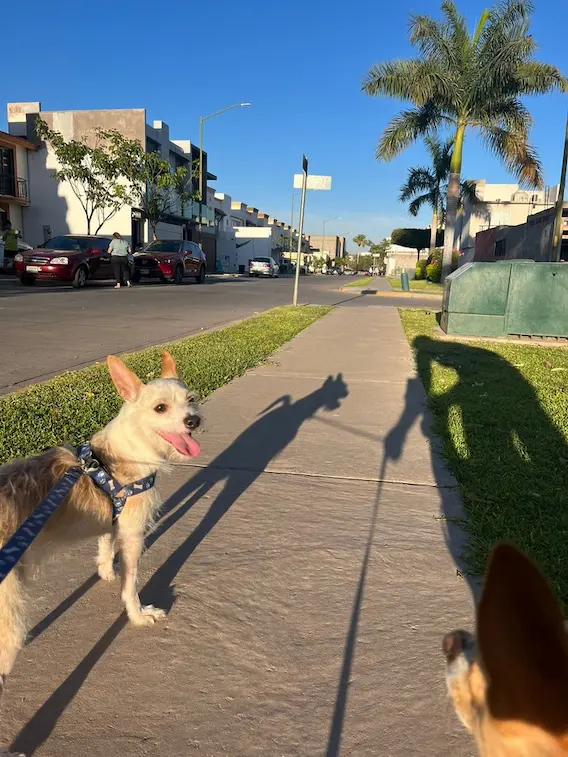

Pet Care Tips
Nutrition for Your Dog

Choosing the right food for your dog is crucial for their overall health and wellbeing. For small breeds like Camilo, I've found that high-quality kibble specifically formulated for small breeds works best. These formulations typically have smaller kibble sizes and nutrient profiles suited to their higher metabolism.
While treats are great for training and bonding, they should only make up about 10% of your dog's daily caloric intake. For Camilo, I use a mix of commercial treats and healthy options like small pieces of carrots, apples (no seeds), and blueberries.
Dental Care
Small breeds are particularly prone to dental issues. Daily tooth brushing with dog-specific toothpaste has been a game-changer for Camilo's dental health. We also incorporate dental chews and regular professional cleanings as recommended by our vet.
Regular nail trims (every 3-4 weeks), ear cleaning, and occasional baths keep him comfortable and healthy.
Training & Behavior

The most effective training approach I've found with Camilo is positive reinforcement. This means rewarding good behavior with treats, praise, or play, rather than punishing unwanted behaviors. This has helped build our bond while teaching him what we expect.
Dogs thrive on routine and clear expectations. Using the same commands, enforcing the same rules, and maintaining consistent schedules has helped Camilo understand boundaries and feel secure.